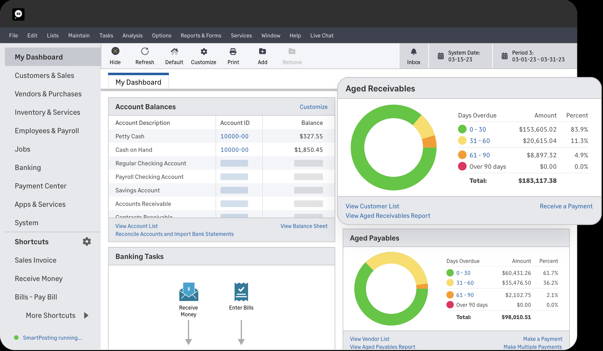
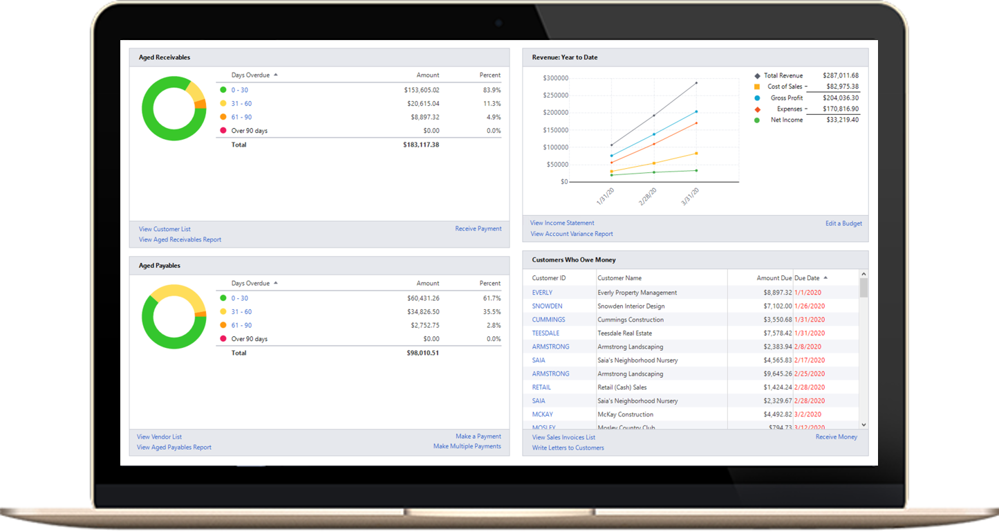
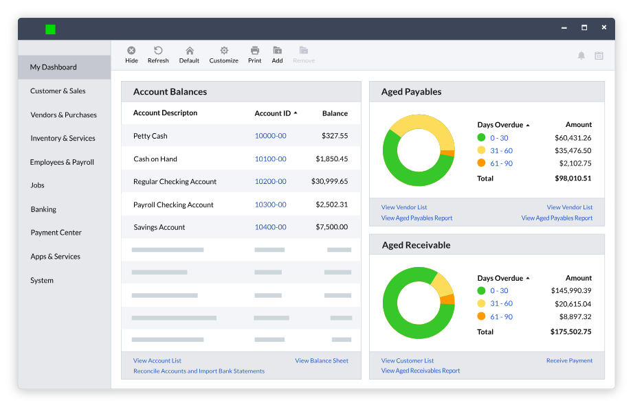

SHORT ON TIME? HERE’S A QUICK SUMMARY
For businesses prioritizing robust financial and inventory reporting, Sage 50 Accounting is an ideal solution. It caters to users who need detailed insights into their finances and stock, especially those managing large inventories, without the hassle of navigating complex report-generation processes. With an extensive array of both high-level and granular financial and inventory reports, Sage 50 Accounting stands out for its efficiency. Reports are generated almost instantly with just a few clicks, making it an exceptional choice for streamlined business analysis. This efficiency and depth make Sage 50 our top pick for financial reporting.
For businesses prioritizing robust financial and inventory reporting, Sage 50 Accounting is an ideal solution. It caters to users who need detailed insights into their finances and stock, especially those managing large inventories, without the hassle of navigating complex report-generation processes. With an extensive array of both high-level and granular financial and inventory reports, Sage 50 Accounting stands out for its efficiency. Reports are generated almost instantly with just a few clicks, making it an exceptional choice for streamlined business analysis. This efficiency and depth make Sage 50 our top pick for financial reporting.

👍 PROS:
- Comprehensive dashboard for streamlined management
- Detailed reporting capabilities for data analysis
- Seamless integration with Microsoft 365 Business
- Extensive range of financial and inventory management reports
- Businesses can customize solutions with Sage 50's open API
- Accessible and easy to use, even for non-accountants
- Cloud-based storage ensures secure access to data from anywhere
- Mobile apps enable financial management and tracking on the go
- Comprehensive setup tools for seamless onboarding
- Customizable user permissions for enhanced security
- Robust inventory tracking capabilities
- Features for department, cost code, and project tracking
- Automated sales tax rate calculations
👎 CONS:
- Offers fewer features compared to some competing platforms
- Outdated interface design
- Limited customization options for reports
- Performance can be sluggish at times
Get Xero - Simplify your business with powerful accounting software
SEE WHAT USERS HAVE TO SAY
"Using Sage has helped us better manage our billing and payment collections in a much more efficient way. The app is also very user friendly and quickly provides useful detail on payments and outstanding's instantly"
"This is an easy to use system - I am not an accountant or even a book keeper and I can use it. If I make a mistake or I am not sure how to undo what I have done then the help section is really useful. I would certainly recommend Sage. VAT submissions are easy too.”
“I have worked with Sage for more than 20 years. I found it to be the most user friendly of all accounting programs. I actually learned a lot about bookkeeping from the program. My boss likes it as well. Although our CPA wants us to change to another program, he refuses because it was so easy for him to learn all the functions of Sage and how to navigate the program.”
WHAT IS SAGE?
Sage is a British company with a long history of providing accountancy software solutions. Known for its reliability and innovation, Sage currently offers Sage Intacct and Sage 50 Accounting as part of its umbrella platform, Sage Business Cloud Accounting, delivering the flexibility and dependability of an online solution. This review focuses on Sage 50 Accounting, a robust solution designed to meet the needs of micro-businesses, small businesses, freelancers, and self-employed individuals.
WHO SHOULD USE SAGE ACCOUNTING SOFTWARE?
Sage 50 Accounting is an excellent choice for a wide range of businesses and industries, thanks to its flexibility and robust features. Here’s who can benefit the most:
Small and Medium-Sized Businesses: If you're running a small or medium-sized business, Sage 50 Accounting can help you simplify and streamline your financial processes. Its tools for invoicing, expense tracking, and real-time reporting are tailored to meet the daily needs of growing companies, ensuring efficiency and accuracy without the need for a dedicated finance team.
Start-Ups: For new businesses navigating their early stages, Sage 50 provides an easy-to-use platform to manage finances effectively. With its focus on automation and real-time insights, start-ups can avoid costly financial errors, ensure compliance, and allocate resources more strategically as they scale.
Businesses Engaged in International Transactions: Companies that deal with global customers or suppliers will appreciate Sage 50’s multi-currency support. The platform simplifies managing international transactions, automatically calculating conversions and ensuring accurate records, making it easier to operate in a global marketplace.
Entrepreneurs and Remote Teams: For entrepreneurs and businesses with remote teams, Sage 50’s cloud-based platform allows you to manage your financial data from anywhere, at any time. This accessibility ensures you’re always connected to your business’s financial health, even on the go.
Whether you’re just starting out, managing a growing company, or conducting international business, Sage 50 Accounting offers the tools and flexibility to meet your financial management needs. Its user-friendly design and robust capabilities make it a valuable resource for businesses aiming to enhance efficiency and maintain financial control.
WHAT ARE THE FEATURES?
Sage 50 Accounting offers a comprehensive suite of desktop-based tools and features, providing robust functionality without relying on a cloud-based setup. Here are its key highlights:
Cash Flow Management: Sage 50 excels in cash flow management by providing easy-to-use tools and reports to track your business’s financial health. With a built-in "what-if" analysis, you can project future cash flow, while detailed breakdowns show how money moves in and out of your business. The program also displays what you're owed and the bills you need to pay, helping you manage short-term cash needs effectively.
Bank Reconciliation: Reconciling bank accounts is made simpler with Sage 50’s automation features. By connecting your business accounts, including checking, credit cards, and savings, the software automatically downloads and matches transactions. This smart reconciliation tool ensures your accounts are balanced and identifies any remaining discrepancies, saving you valuable time.
Invoicing: Sage 50 Accounting makes it easy to create professional invoices that streamline your billing process. The invoicing tools support automatic payment reminders and integrate with Stripe, GoCardless, and PayPal to simplify payment collection. With these features, you can ensure prompt payments and efficient financial management.
Inventory Management: For businesses handling tangible goods, Sage 50 Accounting’s inventory tracking is a major advantage. You can set reorder quantities, adjust stock manually, and import bulk items via spreadsheets. Sage 50 also allows you to create multiple price points, categorize products, and add detailed descriptions. These features ensure you maintain accurate inventory levels and optimize stock management.
Financial Reporting: Sage 50 offers an impressive 150 real-time financial reports to help you analyze your business’s performance. These include profit and loss statements, balance sheets, AR aging, and general ledger reports. Reports can be customized with Sage 50’s pre built templates, providing deeper insights into your business’s financial health.
Integrations: Sage has expanded its integration options significantly, now offering nearly 200 apps through the Sage Marketplace. These include POS systems, customer relationship management (CRM) tools, and add-ons for Sage Payroll. With Microsoft 365 integration, you gain access to cloud data backups and enhanced reporting capabilities in Excel.
Expense Control: The “Jobs” tab is a unique feature of Sage 50 Accounting, allowing you to assign cost codes, phrases, and records to specific projects. This enables you to track costs across purchasing, inventory adjustments, and payroll while identifying the most profitable projects. With customizable job statuses and contact fields, this tool is perfect for cost-conscious business owners.
Additional Features
Payroll Processing: Sage offers integrated payroll services, enabling you to manage employee payments, track benefits, and handle tax reporting within the same platform.
Role-Based Security: The software provides role-based user permissions, allowing you to control access to sensitive information and maintain data security.
Job and Project Costing: Sage 50 includes job and project costing features, helping you track expenses and revenues for specific projects, aiding in profitability analysis.
Advanced Budgeting Tools: The platform offers advanced budgeting capabilities, enabling you to create detailed budgets and compare them against actual performance.
Audit Trails: Sage 50 maintains comprehensive audit trails, providing a record of all transactions and changes, which is essential for compliance and internal controls.
Sage 50 Accounting Accounting combines advanced tools with ease of use, making it a robust choice for efficiently managing your business finances.
IS IT EASY TO USE?
You’ll find Sage 50 Accounting’s interface intuitive and easy to use. Its clean, straightforward layout lets you navigate features effortlessly, making tasks like generating reports or reconciling accounts simple. However, features like invoicing and expense management could use some minor refinements to further enhance your experience.
USER INTERFACE
Sage 50 Accounting prioritizes user experience, delivering an interface that is sleek, intuitive, and easy to navigate. This focus on simplicity has paid off, as 90% of all Trustpilot reviews for Sage 50 Accounting are positive.
The platform is designed to make setup and navigation hassle-free. The initial setup takes only about a minute, after which the welcoming screen provides clear optimization options to tailor the experience to your business needs. Essential features are organized into separate, customizable tabs, making it easy to input and manage your company’s information.
Navigating the platform is straightforward, with the main menu accessible at the top of the page. Sage 50 Accounting features a clean design with a white background, black text, and sage green highlights, ensuring good contrast and readability.
The dashboard serves as a summary tab, displaying key business insights at a glance. Shortcuts to critical features such as sales, expenses, cash flow statements, and cash flow forecasts make day-to-day management efficient. For more detailed tasks, such as adding a new customer, the platform provides clear and comprehensive data input options.
When it comes to reports, Sage 50 Accounting offers 20 different types, covering all essential financial metrics to keep you informed about your business's financial health.
With its user-friendly design and accessible tools, Sage 50 Accounting ensures that even users with minimal accounting experience can manage their finances with confidence and ease.
DESKTOP AND MOBILE APPS
Sage Accounting offers versatile solutions for managing business finances through its robust desktop application and convenient mobile app. The desktop platform serves as the cornerstone for in-depth financial management, providing a reliable environment for handling core accounting tasks with ease. It is ideal for users who require a comprehensive suite of tools and prefer working in a structured, feature-rich desktop environment.
The Sage Accounting mobile app complements the desktop experience by providing on-the-go access to essential accounting tasks. Available for both Android and iOS devices via the Google Play Store and Apple App Store, the app is designed for business owners who need the flexibility to manage their finances from anywhere. By syncing seamlessly with the desktop version, it ensures real-time data updates so you can stay connected with your financial operations whether in the office or on the move. Together, the desktop and mobile apps create a cohesive and efficient accounting ecosystem.
IS IT SAFE AND SECURE?
Sage brings decades of experience and expertise in managing cloud data. The company leverages advanced tools, technologies, and best practices in cybersecurity to safeguard its data, devices, and systems, no matter where they are located. Data is encrypted using the latest version of the internationally recognized Transport Layer Security (TLS) protocol for maximum protection. Sage also proactively searches for vulnerabilities in its software that could be exploited by cyber attackers. The Sage Cyber Defense Operations Team monitors all production environments around the clock for any signs of malicious activity. If you opt to use the Remote Data Access feature, you can enhance security further by enabling two-factor authentication.
IS THERE A FREE VERSION?
Sage 50 Accounting doesn’t offer a free version, but you can take advantage of a 30-day free trial to explore the software's features before making a commitment. This trial gives you plenty of time to see how Sage 50 Accounting can meet your business needs and streamline your financial management.
HOW MUCH IS IT?
Sage 50 Accounting offers three subscription plans tailored to different business needs.
Pro Accounting is designed for solopreneurs, entrepreneurs, and small businesses, providing single-user access for $625 per year. This plan includes features like invoicing and bill tracking, expense management, automated bank reconciliation, financial reporting, and the option to add payroll functionality.
Premium Accounting is ideal for small to medium-sized businesses requiring more advanced tools. It supports 1 to 5 users, with pricing starting at $1,043 per year for a single user. In addition to the features of Pro Accounting, it offers inventory management, job costing, advanced budgeting, and reporting capabilities, as well as Sage Security Shield for enhanced data protection. It also supports managing multiple companies.
For larger businesses, Quantum Accounting provides comprehensive solutions for complex accounting needs. Supporting 1 to 40 users, it starts at $1,780 per year for a single user. This plan includes industry-specific functionality for sectors like construction, manufacturing, and distribution. Other advanced features include role-based user permissions, workflow management, serialized inventory tracking, and audit trails for detailed transaction monitoring.
All Sage 50 Accounting plans come with the following inclusions:
Automatic updates and software enhancements
Unlimited phone and online chat support
24/7 access to learning resources and support materials
An online community of peers and professionals
CUSTOMER SUPPORT
Many software providers fall short when it comes to customer service, but Sage stands out with its extensive support resources:
Sage City: This interactive 24/7 online forum connects you with peers, partners, Sage experts, and other users to discuss issues, share tips, and exchange ideas. You can post questions or problems and receive responses from Sage’s support team and fellow users. Developers can also access a dedicated forum for integration-related discussions.
Online Reference Materials: Sage provides a comprehensive knowledge base with product guides and reference materials to help users troubleshoot and learn independently.
Sage University: This platform offers training courses designed to help small business owners maximize the software's capabilities. These online classes provide a thorough understanding of Sage and general business advice.
One-on-One Support: For direct assistance, you can chat with customer support agents Monday through Friday, from 9:30 a.m. to 5:30 p.m. Eastern time, or schedule a personalized session through Sage 50 Expert Services.
Although hands-on support isn’t available 24/7, Sage still achieves a strong customer service rating, scoring 4.4 out of 5 on Trustpilot. These resources make it easier for users to resolve issues and make the most of the software.
BOTTOMLINE
Sage 50 Accounting is a powerful solution for growing businesses that need advanced accounting features and detailed inventory management. It offers a customizable dashboard to keep essential financial metrics at your fingertips, extensive form fields to capture detailed data, and over 150 exportable reports for in-depth analysis. With its robust capabilities, Sage 50 is ideal for companies seeking comprehensive tools to track cash flow, manage projects, and handle the complexities of business expansion, making it a valuable asset for taking financial management to the next level.
"Using Sage has helped us better manage our billing and payment collections in a much more efficient way. The app is also very user friendly and quickly provides useful detail on payments and outstanding's instantly"
"This is an easy to use system - I am not an accountant or even a book keeper and I can use it. If I make a mistake or I am not sure how to undo what I have done then the help section is really useful. I would certainly recommend Sage. VAT submissions are easy too.”
“I have worked with Sage for more than 20 years. I found it to be the most user friendly of all accounting programs. I actually learned a lot about bookkeeping from the program. My boss likes it as well. Although our CPA wants us to change to another program, he refuses because it was so easy for him to learn all the functions of Sage and how to navigate the program.”
WHAT IS SAGE?
Sage is a British company with a long history of providing accountancy software solutions. Known for its reliability and innovation, Sage currently offers Sage Intacct and Sage 50 Accounting as part of its umbrella platform, Sage Business Cloud Accounting, delivering the flexibility and dependability of an online solution. This review focuses on Sage 50 Accounting, a robust solution designed to meet the needs of micro-businesses, small businesses, freelancers, and self-employed individuals.
WHO SHOULD USE SAGE ACCOUNTING SOFTWARE?
Sage 50 Accounting is an excellent choice for a wide range of businesses and industries, thanks to its flexibility and robust features. Here’s who can benefit the most:
Whether you’re just starting out, managing a growing company, or conducting international business, Sage 50 Accounting offers the tools and flexibility to meet your financial management needs. Its user-friendly design and robust capabilities make it a valuable resource for businesses aiming to enhance efficiency and maintain financial control.
WHAT ARE THE FEATURES?
Sage 50 Accounting offers a comprehensive suite of desktop-based tools and features, providing robust functionality without relying on a cloud-based setup. Here are its key highlights:
Additional Features
Sage 50 Accounting Accounting combines advanced tools with ease of use, making it a robust choice for efficiently managing your business finances.

IS IT EASY TO USE?
You’ll find Sage 50 Accounting’s interface intuitive and easy to use. Its clean, straightforward layout lets you navigate features effortlessly, making tasks like generating reports or reconciling accounts simple. However, features like invoicing and expense management could use some minor refinements to further enhance your experience.
USER INTERFACE
Sage 50 Accounting prioritizes user experience, delivering an interface that is sleek, intuitive, and easy to navigate. This focus on simplicity has paid off, as 90% of all Trustpilot reviews for Sage 50 Accounting are positive.
The platform is designed to make setup and navigation hassle-free. The initial setup takes only about a minute, after which the welcoming screen provides clear optimization options to tailor the experience to your business needs. Essential features are organized into separate, customizable tabs, making it easy to input and manage your company’s information.
Navigating the platform is straightforward, with the main menu accessible at the top of the page. Sage 50 Accounting features a clean design with a white background, black text, and sage green highlights, ensuring good contrast and readability.
The dashboard serves as a summary tab, displaying key business insights at a glance. Shortcuts to critical features such as sales, expenses, cash flow statements, and cash flow forecasts make day-to-day management efficient. For more detailed tasks, such as adding a new customer, the platform provides clear and comprehensive data input options.
When it comes to reports, Sage 50 Accounting offers 20 different types, covering all essential financial metrics to keep you informed about your business's financial health.
With its user-friendly design and accessible tools, Sage 50 Accounting ensures that even users with minimal accounting experience can manage their finances with confidence and ease.

DESKTOP AND MOBILE APPS
Sage Accounting offers versatile solutions for managing business finances through its robust desktop application and convenient mobile app. The desktop platform serves as the cornerstone for in-depth financial management, providing a reliable environment for handling core accounting tasks with ease. It is ideal for users who require a comprehensive suite of tools and prefer working in a structured, feature-rich desktop environment.
The Sage Accounting mobile app complements the desktop experience by providing on-the-go access to essential accounting tasks. Available for both Android and iOS devices via the Google Play Store and Apple App Store, the app is designed for business owners who need the flexibility to manage their finances from anywhere. By syncing seamlessly with the desktop version, it ensures real-time data updates so you can stay connected with your financial operations whether in the office or on the move. Together, the desktop and mobile apps create a cohesive and efficient accounting ecosystem.
IS IT SAFE AND SECURE?
Sage brings decades of experience and expertise in managing cloud data. The company leverages advanced tools, technologies, and best practices in cybersecurity to safeguard its data, devices, and systems, no matter where they are located. Data is encrypted using the latest version of the internationally recognized Transport Layer Security (TLS) protocol for maximum protection. Sage also proactively searches for vulnerabilities in its software that could be exploited by cyber attackers. The Sage Cyber Defense Operations Team monitors all production environments around the clock for any signs of malicious activity. If you opt to use the Remote Data Access feature, you can enhance security further by enabling two-factor authentication.
IS THERE A FREE VERSION?
Sage 50 Accounting doesn’t offer a free version, but you can take advantage of a 30-day free trial to explore the software's features before making a commitment. This trial gives you plenty of time to see how Sage 50 Accounting can meet your business needs and streamline your financial management.
HOW MUCH IS IT?
Sage 50 Accounting offers three subscription plans tailored to different business needs.
Pro Accounting is designed for solopreneurs, entrepreneurs, and small businesses, providing single-user access for $625 per year. This plan includes features like invoicing and bill tracking, expense management, automated bank reconciliation, financial reporting, and the option to add payroll functionality.
Premium Accounting is ideal for small to medium-sized businesses requiring more advanced tools. It supports 1 to 5 users, with pricing starting at $1,043 per year for a single user. In addition to the features of Pro Accounting, it offers inventory management, job costing, advanced budgeting, and reporting capabilities, as well as Sage Security Shield for enhanced data protection. It also supports managing multiple companies.
For larger businesses, Quantum Accounting provides comprehensive solutions for complex accounting needs. Supporting 1 to 40 users, it starts at $1,780 per year for a single user. This plan includes industry-specific functionality for sectors like construction, manufacturing, and distribution. Other advanced features include role-based user permissions, workflow management, serialized inventory tracking, and audit trails for detailed transaction monitoring.
All Sage 50 Accounting plans come with the following inclusions:
CUSTOMER SUPPORT
Many software providers fall short when it comes to customer service, but Sage stands out with its extensive support resources:
Although hands-on support isn’t available 24/7, Sage still achieves a strong customer service rating, scoring 4.4 out of 5 on Trustpilot. These resources make it easier for users to resolve issues and make the most of the software.
BOTTOMLINE
Sage 50 Accounting is a powerful solution for growing businesses that need advanced accounting features and detailed inventory management. It offers a customizable dashboard to keep essential financial metrics at your fingertips, extensive form fields to capture detailed data, and over 150 exportable reports for in-depth analysis. With its robust capabilities, Sage 50 is ideal for companies seeking comprehensive tools to track cash flow, manage projects, and handle the complexities of business expansion, making it a valuable asset for taking financial management to the next level.
Get Xero - Simplify your business with powerful accounting software